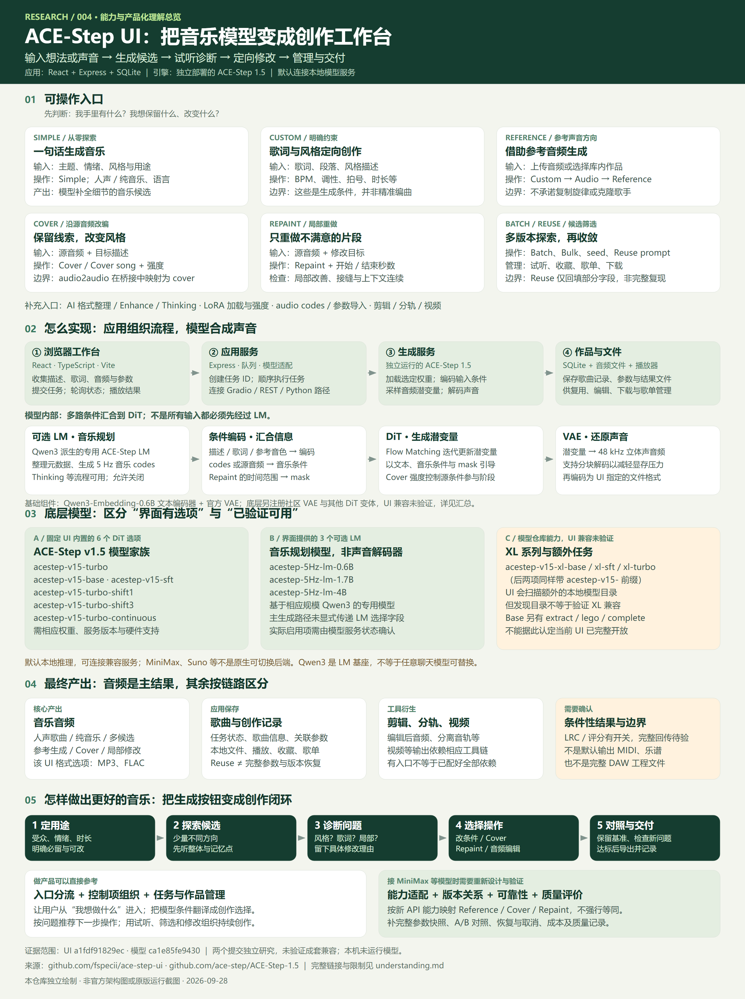

DiT：生成音乐表示
DiT 是 Diffusion Transformer。它读取条件，多轮更新潜变量，生成音乐的内部表示。在这里，具体采样使用 Flow Matching。
DiT 本身就是模型。处理前的数据和处理后的结果，都不叫 DiT。
ACE-STEP UI / THE COMPLETE PICTURE
ACE-Step UI 把描述、歌词和音频变成生成条件，把 ACE-Step 1.5 的生成、参考、改编与局部重绘能力组织为音乐工作台。它的产品价值在于：让用户能探索、试听、定位问题、继续修改并管理作品。
源码研究：UI a1fdf91829ec · 模型 ca1e85fe9430 · 2026-09-28
两个版本独立核对，未验证成套兼容。本页为研究图解，未在本机运行模型或生成音乐。
六项摘要 · DiT、潜变量与 VAE 通俗解释 · 支持模型清单

已展示模型团队公开样例；本仓库未运行原版模型。样例能说明某些声音结果，不能证明全部入口、参数或模型组合已可用。
先从产品理解，再按需看内部
做音乐产品时，可以先把整套 ACE-Step 当作一个模型黑盒：输入描述、歌词或音频，设置可用的控制项，得到音乐结果。我们首先关注输入、控制范围、效果、耗时与成本。
ACE-Step UI 的作用：把模型能力组织成表单、音频入口、任务队列、试听、作品管理和继续修改的流程。改接其他供应商时，可以参考这些产品逻辑，再逐项匹配对方真正开放的能力。
DiT 是 Diffusion Transformer。它读取条件，多轮更新潜变量，生成音乐的内部表示。在这里，具体采样使用 Flow Matching。
DiT 本身就是模型。处理前的数据和处理后的结果，都不叫 DiT。
它接近“模型内部的向量表示”：用紧凑的多维数字数组承载声音信息。
可以想成机器可读的声音草稿；它不是声音编号、乐谱或 MIDI，不能直接播放。
VAE 是变分自编码器。编码器将音频转为潜变量；解码器把生成的潜变量还原为声音波形。
它是学到的音频表示转换，不等同于把 WAV 文件压成 MP3。
文字等条件 + 随机潜变量 → DiT 多轮生成 → 音乐潜变量 → VAE 解码 → 声音波形 → MP3 / FLAC 文件
可选 LM 先提供音乐规划；文字编码器提供条件表示。不是所有输入都必须经过 LM。
已有音频 → VAE 编码 → 源音频潜变量 → DiT 结合新条件生成 → VAE 解码 → 修改后的声音
这是简化链路，实际还有条件编码、随机采样与编辑范围 mask 等控制。Reference 使用参考条件通路，不应与沿源音频改编混为一谈。
一句话记忆：DiT 是“做计算的模型”；潜变量是“被计算的数据”；VAE 是“把内部表示和声音互相转换的模型”。
产品设计先关注模型的输入输出契约。需要本地部署、显存优化、训练、替换组件或深度排障时，再深入内部实现。以上为教学简化；固定源码与技术报告依据见完整研究说明。
acestep-v15-turboacestep-v15-baseacestep-v15-sftacestep-v15-turbo-shift1acestep-v15-turbo-shift3acestep-v15-turbo-continuous需要对应权重、模型服务和硬件。界面简称 1.5B 中的 B 指 Base，不是参数量。
acestep-5Hz-lm-0.6Bacestep-5Hz-lm-1.7Bacestep-5Hz-lm-4B它们基于相应规模的 Qwen3，用于音乐规划。主生成适配路径未显式传递 LM 选择字段，实际加载项需要看模型服务状态；不能把下拉框选项等同于已生效。
acestep-v15-xl-baseacestep-v15-xl-sftacestep-v15-xl-turbo固定 UI 会扫描额外本地模型目录，但未验证 XL 配套兼容。Base 的 extract、lego、complete 等任务，也不能直接认定已在这个 UI 中完整开放。
配套组件：Qwen3-Embedding-0.6B 文本编码器与官方 VAE。底层还注册了社区 VAE 和其他 DiT 变体，详见完整说明第 3.4 节；这些不属于本次已验证的 UI 可用组合。
先参考操作与决策流程：从零探索用描述，约束作品用歌词和风格，借鉴声音用 Reference，沿已有音乐改编用 Cover，局部不满意用 Repaint，剪辑问题交给音频编辑。
再匹配自己的模型：如果改接 MiniMax，需要逐项核对 API 是否提供对应条件、音频输入与编辑能力；该 UI 不是通用供应商适配层，不能仅换 URL 就得到全部功能。
把质量改善做成产品：保留基准、对照试听、记录具体问题、完整保存参数与版本关系，让用户知道下一步为什么这样改。后几项是产品建议，不能认定原库已完整实现。
查看每个入口怎么操作、生成后听什么、下一步怎么改 →模型列表与任务入口依据：UI 模型与生成路由、创作面板、模型适配层、模型仓库文档。完整原理来源、版本说明与许可记录见研究文档。